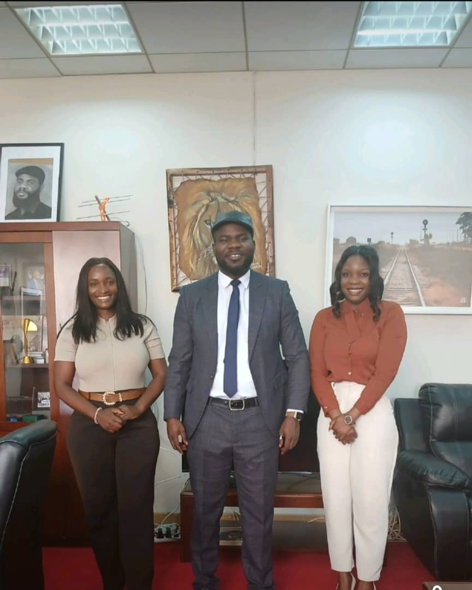
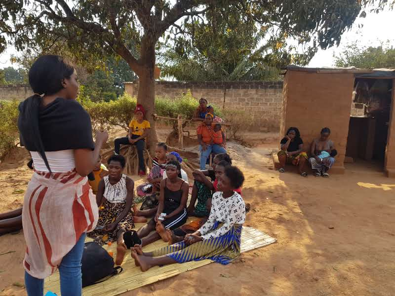

01 · Youth
Youth Empowerment
Vocational skills training, entrepreneurship, digital literacy, healthcare awareness, environmental education, leadership development, and wellness programs.
Vocational skills training, entrepreneurship, digital literacy, healthcare awareness, environmental education, leadership development, and wellness programs.

Safeguarding policies, access to quality education, healthcare, psychosocial support, family strengthening, advocacy, and social inclusion for vulnerable children.

Assessments and data-driven studies that promote evidence-based decision-making, innovation, and the effectiveness of development programs.

Capacity-building initiatives, economic empowerment programs, and sustainable livelihood interventions that strengthen local communities.

Preventive healthcare, health education, nutrition, mental health awareness, and access to essential health information across communities.

Improving access to quality education, literacy programs, digital learning, and lifelong learning for children, youth, and adults.

Strategic partnerships with government, communities, private sector, NGOs, faith-based organizations, and international development partners.

Advocacy for children's rights, youth empowerment, gender equality, social justice, and inclusive community development.

Humanitarian assistance, disaster preparedness, relief, recovery, and resilience-building support to vulnerable communities during emergencies.